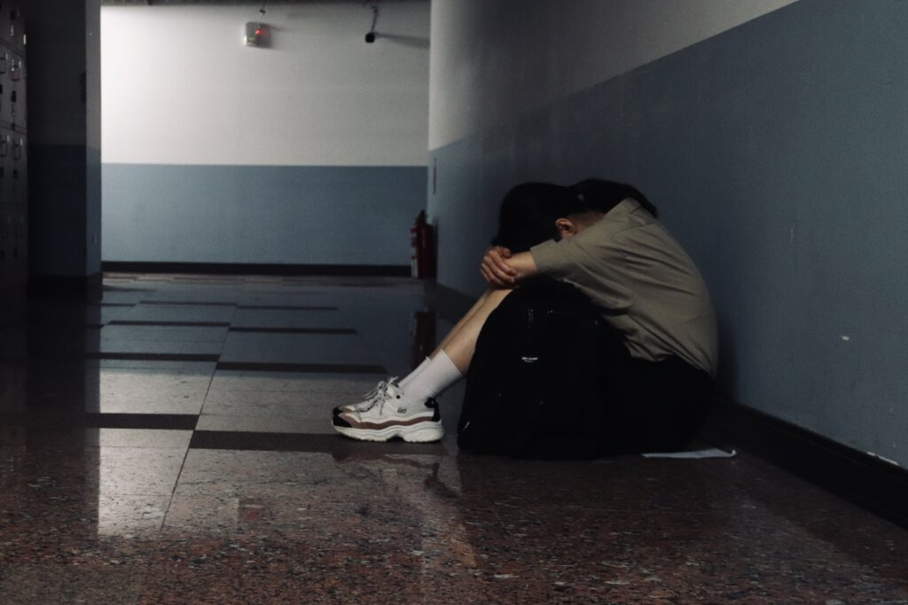

蔡文馨
土生土長澎湖人，政治大學新聞系畢業。
曾任政大之聲實習電台主持人、《大學線》學生記者、《政大人》校訊記者，
喜愛廣播、文字、攝影，特別關注教育、文化及人權議題。
Where the heart desires, the future is promising✨
土生土長澎湖人，政治大學新聞系畢業。
曾任政大之聲實習電台主持人、《大學線》學生記者、《政大人》校訊記者，
喜愛廣播、文字、攝影，特別關注教育、文化及人權議題。
 專題
專題
「拒學的問題是需要被關注的，若沒有即時處理，慢慢演變成其他的精神疾病，可能會有遺憾發生。」孩子的拒學現象刻不容緩，但拒學生對於許多師長而言仍相當陌生，在尋求資源與他人理解的路上面臨重重困難⋯⋯
「學校對我來說就像是監獄。」17歲的Haci（化名），形容著國二到國三那段日子。只要接近學校，就會出現身體不適、無法控制情緒的症狀，看似是孩子氣的無理取鬧，但事實上，這是「拒學症」初期的典型狀態⋯⋯

「點選15秒的錄製時長，面對著鏡頭，搭配時下最紅的「抖音舞曲」，隨著音樂扭腰擺臀，殷切期待著同儕間的互動與關注⋯⋯這是12歲的小魚（化名）放學後的日常，也是現今許多兒童課餘的閒暇娛樂。

「來這裡都喜歡啦！像是我們的故鄉。」楊玉樹形容「文化健康站」。二十多年前，來自台東排灣族的楊玉樹，為了工作與丈夫移居到台中，從永春文健站籌備到正式成立的三年間，不時可以看到他⋯⋯
 新聞
新聞

台灣首次公民修憲複決案「18歲公民權」將於26日與九合一大選共同舉行。此項公投案雖將下修投票年齡，賦予青年參與政治的權利⋯⋯

國立中山大學去年首創「心理不適假」，搭配導師關懷與諮商介入等配套措施，協助學生調適身心狀態。中山學務長楊靜利表示⋯⋯

「不要以為一切會回來，不要迷信曾經的熱愛，在如夢初醒的今天，我們是最後一代⋯⋯」民眾伴隨著吉他聲高唱，一同聲援中國各地⋯⋯

111年新北城市盃全國田徑公開賽於1日至5日在板橋第一運動場舉行，集結國內各方好手共襄盛舉。「台灣最速男」楊俊瀚再度擊敗⋯⋯

台灣桌球界少見的兄弟檔，國內男子排名第六、臺北市立大學黎昕祐聯手同來自北市大的哥哥黎昕陽，一路過關斬將闖進四強⋯⋯

「Ippon！」四分鐘時間快速倒數，國立臺東大學林崇佑最終在1分40秒，以「足技」壓制同校學弟林彥呈獲得勝利⋯⋯

111年度全國田徑錦標賽男子組撐竿跳高項目21日在大雨中登場，代表屏東縣參賽的國立屏東大學林志成與黃正琦最終勇奪冠、季軍⋯⋯

趙林嘉自地面跳起，快速伸出長腿，使出一記「下壓」將球回擊至對手場內得分。中華民國大專校院111學年度藤球錦標賽男子組二人賽⋯⋯